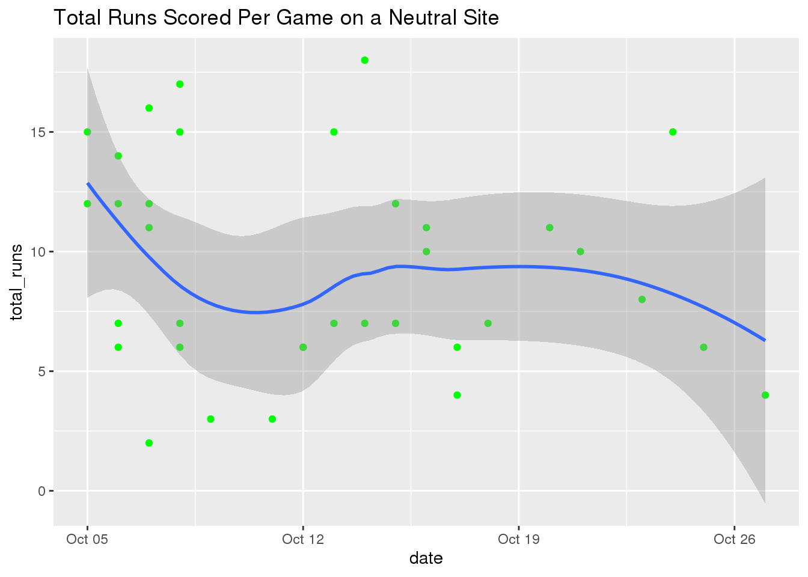
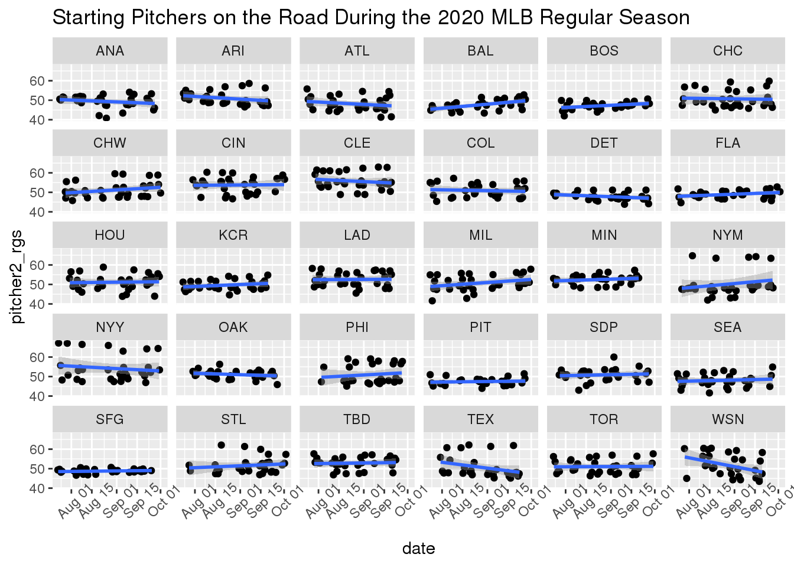

library(tidyverse)
dat_mlb <- read_csv("mlb_elo_latest.csv")Data
The second data set we’ll be examining for this project is the Major League Baseball Elo data set given in the mlb_elo_latest.csv file on the FiveThirtyEight website. The MLB Elo data set has 951 observations of 26 variables: the variables team1 and team2 are abbreviations for the home and away team, the variables elo_prob1 and elo_prob2 define the home and away team’s probability of winning according to Elo ratings, the variables pitcher1 and pitcher2 list the name of the home and away starting pitcher, the variables rating_prob1 and rating_prob2 indicate the home and away team’s probability of winning according to team ratings AND starting pitcher adjustment, and the variables score1 and score2 provide the number of runs scored for either team in each game.
Question 1:
Did games being played on a neutral site (mainly the postseason) lead to less runs being scored or was there not much of a difference? To explore this question, we visualize the total number of runs scored per game on a neutral site versus in series that were played in each team’s respective home ballpark.
home_ballparks <- dat_mlb %>% filter(neutral == 0) %>% mutate(total_runs = score1 + score2)
neutral_site <- dat_mlb %>% filter(neutral == 1) %>% mutate(total_runs = score1 + score2)
ggplot(data = home_ballparks, mapping = aes(x = date, y = total_runs)) + geom_point(color = "navy") + geom_smooth() + ggtitle("Total Runs Scored Per Game in Home Ballparks")## `geom_smooth()` using method = 'loess' and formula 'y ~ x'ggplot(data = neutral_site, mapping = aes(x = date, y = total_runs)) + geom_point(color = "green") + geom_smooth() + ggtitle("Total Runs Scored Per Game on a Neutral Site")## `geom_smooth()` using method = 'loess' and formula 'y ~ x'
Based on the visualizations, there wasn’t quite enough evidence to support the idea of fewer runs being scored on a neutral site as compared to in a traditional home ballpark. Obviously, the neutral site graph contains a smaller sample size but a majority of its path still lies in that 8.5-9.5 run range. On the contrary, it can be said that the distinct line paths do vary between the two. In the home ballparks visualization, the line is relatively flat hovering around the 9 run mark. The line in the neutral site visualization starts by sharply decreasing from a higher run total of roughly 12.5, plateauing in the 8-9.5 range, and then finally trailing off below the 7.5 mark. Does this give us insight as to how pitchers adjusted throughout these relative time periods? In the postseason, it’s understood that teams will try and deploy only their best pitching options throughout a series. Keeping that in mind, it tracks that scoring gradually went down as the playoffs went on.
Question 2:
On average, did the ratings of starting pitchers progress throughout the regular season? If so, which pitching staff(s) exemplified an improvement? I’ll perform a linear regression analysis to determine the overall effectiveness of pitchers across all 60 games. We’ll have visuals for starting pitchers (home and away) on every team.
pitcher_variables <- c("pitcher1_rgs", "pitcher2_rgs", "date", "team1", "team2", "pitcher1", "pitcher2", "neutral", "playoff")
pitcher_ratings <- dat_mlb[pitcher_variables] %>% filter(neutral == 0)
ggplot(data = pitcher_ratings, mapping = aes(x = date, y = pitcher1_rgs)) + facet_wrap(~ team1) + geom_point(position = "jitter") + theme(legend.position = "none") + ggtitle("Starting Pitchers at Home During the 2020 MLB Regular Season") + theme(axis.text.x = element_text(angle = 45, hjust = 0.5)) + geom_smooth(method = "lm", formula = y ~ x)ggplot(data = pitcher_ratings, mapping = aes(x = date, y = pitcher2_rgs)) + facet_wrap(~ team2) + geom_point(position = "jitter") + theme(legend.position = "none") + ggtitle("Starting Pitchers on the Road During the 2020 MLB Regular Season") + theme(axis.text.x = element_text(angle = 45, hjust = 0.5)) + geom_smooth(method = "lm", formula = y ~ x)
The graphs above would signal each team’s group of starting pitchers performed relatively similar throughout the course of the regular season. This goes for both at home and on the road. Now there are some outliers within this data set that can and should be recognized. If we look closer at the “Starting Pitchers at Home” graph we’ll notice that the Chicago Cubs (CHC), Los Angeles Dodgers (LAD), and Minnesota Twins (MIN) show growth in their SP ratings from August to October. On the flip side, for “Starting Pitchers on the Road”, teams such as the Baltimore Orioles (BAL), Chicago White Sox (CHW), Milwaukee Brewers (MIL), and New York Mets (NYM) also appear to demonstrate some improvement. All in all, pitching at the professional level is not an easy task let alone starting a game. Batters are very skilled and from time to time will rough up the opposing starting pitcher with an onslaught of hits and runs. This is evident for a few teams where their SP trend line actually dips a bit over the 3 month period.
Question 3:
Who was the hottest team in each round of the postseason? The Dodgers were crowned World Champs in 6 games over the Tampa Bay Rays but is that to say they had all the momentum heading into the World Series let alone the entire span of the playoffs? Let’s find out.
Note: Only variables elo1_pre and elo1_post will be used to calculate the change in elo rating per round (team2 variables output the inverse)
postseason_variables <- c("date", "playoff", "team1", "elo1_pre", "elo1_post", "team2", "elo2_pre", "elo2_post")
ws <- dat_mlb[postseason_variables] %>% filter(playoff == "w") %>% mutate(elo1_change = elo1_post - elo1_pre)
ggplot(data = ws, mapping = aes(x = team1, y = elo1_change, color = team1)) + geom_boxplot() + ggtitle("Change in Team Elo Rating during the World Series") + theme(legend.position = "none")As expected, the Dodgers (LAD) were the hotter team in the World Series raising their team elo rating on average by 2 points. Let’s dive into the League Championship Series to see if this pattern holds true.
lcs <- dat_mlb[postseason_variables] %>% filter(playoff == "l") %>% mutate(elo1_change = elo1_post - elo1_pre)
ggplot(data = lcs, mapping = aes(x = team1, y = elo1_change, color = team1)) + geom_boxplot() + ggtitle("Change in Team Elo Rating during the League Championship Series") + theme(legend.position = "none")In the LCS, the Dodgers weren’t quite able to claim title of hottest team throughout. That can be given to both teams from the American League in the Houston Astros (HOU) and Tampa Bay Rays (TBD). Something important to note from this figure is that the median elo change for both HOU and TBD are almost identical whereas for the Atlanta Braves (ATL) and LAD there’s about a 2-3 point gap. This is because the series between HOU and TBD was much more competitive where the Astros and Rays battled it out in 7 games for a chance to go to the World Series.
library(dplyr)
library(ggplot2)
div <- dat_mlb[postseason_variables] %>% filter(playoff == "d") %>% mutate(elo1_change = elo1_post - elo1_pre)
ggplot(data = div, mapping = aes(x = team1, y = elo1_change, color = team1)) + geom_boxplot() + ggtitle("Change in Team Elo Rating during the Division Series") + theme(legend.position = "none")
There seems to be a much bigger gap between teams in the divisional round. The visual above does a great job of highlighting this as Atlanta and Los Angeles absolutely dominated their opponents this time around (ATL played FLA and LAD played SDP). Here, the hottest team could really go to any one of ATL, LAD, & TBD but because we’ve generally been basing this off of median elo change, we’ll go ahead and hand it to the Braves.
Lastly, there is the lonely Wild Card round – not to be forgotten as it is the first step in advancing towards a postseason run. Will there be any surprise teams in the beginner stage of the playoffs?
wc <- dat_mlb[postseason_variables] %>% filter(playoff == "c") %>% mutate(elo1_change = elo1_post - elo1_pre)
ggplot(data = wc, mapping = aes(x = team1, y = elo1_change, color = team1)) + geom_boxplot() + ggtitle("Change in Team Elo Rating during the Wild Card Round") + theme(legend.position = "none")Some new teams in the conversation here include the Chicago Cubs (CHC) Cleveland Indians (CLE) & Minnesota Twins (MIN). Neither one of those three did enough to supplant themselves as the hottest team of the Wild Card round. That, in this case, would go to the San Diego Padres (SDP). They just barely outperformed ATL and TBD accounting for volatility (1st and 3rd quartiles).
Conclusion
Baseball in 2020 was quite the show. A 60-game regular season put the pressure on teams to play well each and every night. Standings were tight heading into the playoffs and that made for a really eventful month of October. Teams who were able to overcome the difficulties of COVID-19 along with managing a fast-paced schedule set themselves up for success. After digging through a few of these metrics, I hope the viewer was able to better understand some of baseball’s more fascinating intricacies.